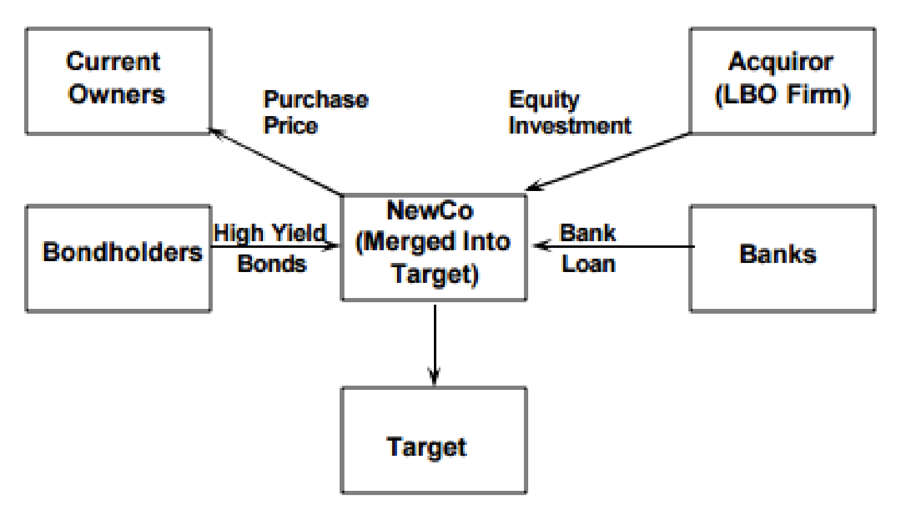

Structure Finance and Leverage Buyout
Author: Adam Updated: 27/05/2019
Structured finance includes a set of complex financial instruments that several kind of market actors offer to borrowers whose needs are too sophisticated and unique to be satisfied trough a simple loan. As consequence, this finance instruments implemented are more complex and risky.
Leveraged buyouts with financing allowed to a SPV (NewCo) by a bank or an institutional investor for the purpose of taking over another company. Cash flows deriving from the acquired company are used both as collateral as debt repayment.
Common Features of structure finance:
- Presence of the SPV as the borrower
- All economic consequences generated by the initiative are attributed to the SPV
- Asset of the SPV
- Extreme Use of Leverage/Debt
Benefits of Structure Finance
- Sponsoring Party: financial flexibility
- Reduced cost of funding
- Raise capital in bad market condition
Main Actors in the Markets
- market-oriented: LBOs and securitization
- bank-oriented: project finance
LBOs deal can differ in terms of who carries out the acquisition and whether the actor is already inside or outside the target to LBO, MBO(Management), MBI(buyin), FBO, FBI.
Types of leverage acquisition.
MERGER SALE
- In a Merger Sale, the SPV is created using a small amount of equity (minimum capital requirements) and a lot of debt. Than the SPV collect funds which are then used to acquire the control of the equity of the target.
ASSET SALE
- In Asset sale the acquisition involves only a profitable business division of a company. Thus, the process is mainly focused on the selection of the assets that can be acquired, the analysis of the main options that reduce the D/E and increase the financial structure efficiency.
The high amount of debt used makes the transaction very risky, both in terms of Loss given default, due to few collaterals provided, and probability of default.
- Loss given default: SPV guarantees, usually assets
- Probability of default: based on cash flows, asset stripping, securitization
The procedure of LBO
- The creation of NewCo SPV
- The funding of the NewCo with minimum amount of equity and lot of debt
- The acquisition of 100% of the target shares Merger sale or of a specific division Asset sale
- Merger of target into NewCo

Key features of an ideal target for an LBO
- Mature market
- Strong Cash Flow Generation
- Strong market position
- Good Management
- Low growth but with growth opportunities
- Non‐core assets eventually to be disposed
- Low initial leverage
GOOD CONDITIONS FOR LBOs
- Generic conditions refer to the Target company
- mature enough
- Availability of assets
- Shareholders should be willing to sell
- Specific Conditions (target-related) are more related to the characteristics of the company:
- FCF unlevered > debt repayment
- EBIT > Interest Expenses
- Good Rating
- Acceptable D/E ratio
Values of LBO
- Deleverage: Debt
- Arbitrage: Mulitiple
- Growth: EBITDA